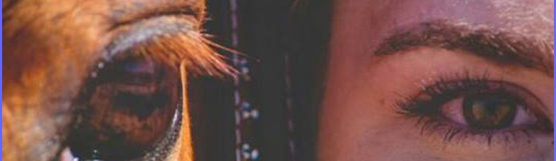

Tristan....this is a short story about how you and your new Aunt Linda & Uncle Raiford met, but more importantly it is a story about you & your horse. In Dec. of 2016 a young lady we had never met before came into our lives. It was during the journey of your dad searching for his birth father that brought us together. Little did we know at the time that our already large family was about to become even larger. We will never forget that day, watching you walk towards us at that "Cracker Barrel" Restaurant. Little did we know that you were going to steal our hearts with that first smile & hug of yours. But, it did happen......not only did your dad finally find his dad that day, but we were blessed with three new awesome family members. Tristan, although we have only known you for a very short time we have fallen completely in love with you. Uncle Raiford made you this little app as a special tribute to you & your journey from gymnast to horse riding. We hope you enjoy it! On the next page, in your moms own words is your story:
Love,
Aunt Linda